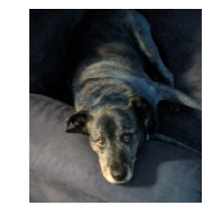

Cropping an Image
I had a picture of my dog that I wanted to trim down a bit. The picture itself had width 400 and height 553.
from IPython.display import Image
Image('images/daisy.jpg')Using PIL
Load in the image
from PIL import Image
im = Image.open('images/daisy.jpg')
im
Inspecting the docstring for im.crop() had me scratching my head a bit
Returns a rectangular region from this image. The box is a
4-tuple defining the left, upper, right, and lower pixel
coordinate.
But then I realized that this was looking for 4 values that make up two cooridinates:
- The first two are the upper-left corner of the box I want
- The last two are the bottom-right corner
It figures out where to place the upper-right and bottom-left accordingly.
Finally, since the image array has values (0, 0) in the upper-left corner of the image, and is positive in both dimensions toward the bottom-right, I played around a bit to find the right values that got me my pooch.
im.crop((100, 100, 300, 325))
Using cv2
Again, because cv2 means you should think numpy, we’ll use array slicing to do our cropping.
Conveniently, this also follows the same numerical design as PIL with (0, 0) in the upper-left, axis-0 as height, and axis-1 as width.
import cv2
im = cv2.imread('images/daisy.jpg')
cropped = im[100:325, 100:300]%pylab inline
plt.imshow(cropped)
plt.axis('off');Populating the interactive namespace from numpy and matplotlib
